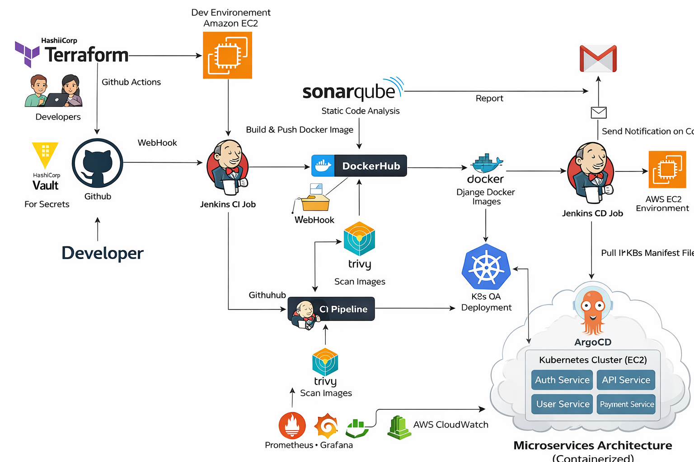
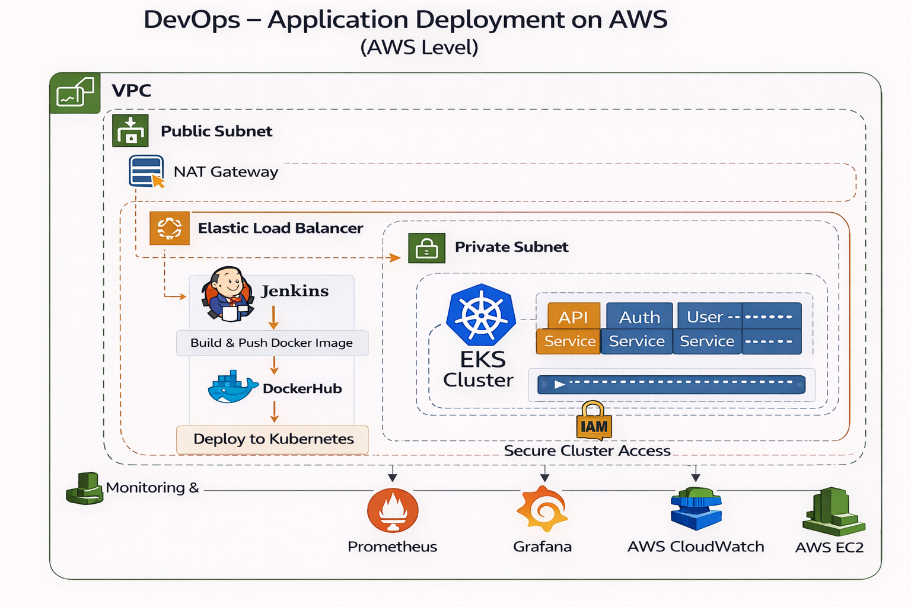

DevOps Engineer with 3+ years of experience in AWS, CI/CD, and Kubernetes
I am a proactive DevOps Engineer with over 3 years of expertise in AWS cloud infrastructure, CI/CD automation, and container orchestration. I specialize in building scalable systems using Terraform, Jenkins, and Kubernetes, focusing on improving system reliability, performance, and automation.
I have successfully improved deployment efficiency, reduced infrastructure cost, and enhanced system uptime through strong analytical skills and incident management practices.
Tech: AWS, Terraform, Jenkins, Docker, Kubernetes
Standardized CI/CD pipelines and automated infrastructure provisioning.
Impact: 35% better deployment reliability, 40–50% faster provisioning
Tech: AWS, Docker, Kubernetes, GitHub Actions
Built scalable microservices platform with CI/CD automation.
Impact: 45% faster deployments, 99.9% uptime


📧 Email: shwetabharambe2196@gmail.com
📱 Phone: +91-7507559421
📍 Location: Pune, India